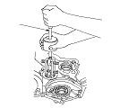
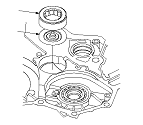
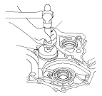
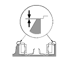

Torque Converter Housing Countershaft Bearing Replacement
Special Tools Required
Adjustable bearing remover set
07JAC-PH80000
Handle driver
07749-0010000
Driver attachment, 62 x 68 mm
07746-0010500
Remove the countershaft bearing with the special tool.

Remove the ATF guide plate (A), and check it for wear and damage. If the guide plate is worn or damaged, replace it.
Install the ATF guide plate in the housing, and install the new countershaft bearing (B).

Install the bearing securely in the housing with the special tools.

Make sure that the bearing outer race notch-cut (A) is installed in height of 0−0.05 mm (0−0.002 in.) (B) above the housing surface (C). Do not install the bearing exceed 0.05 mm (0.002 in.) high from housing surface.
